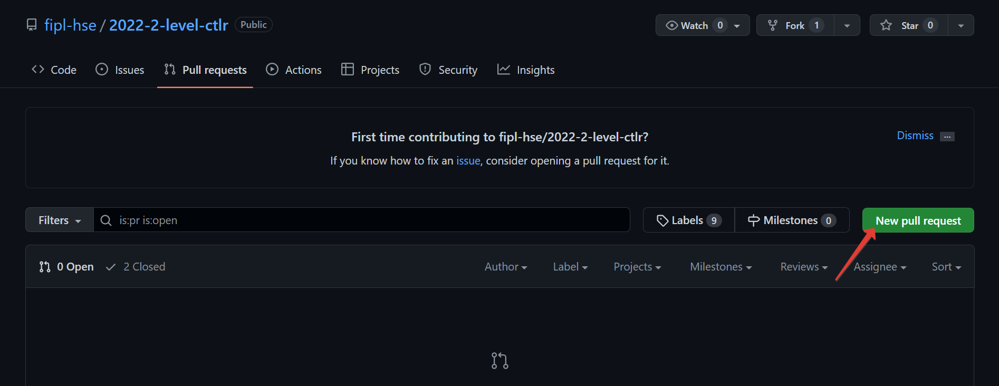
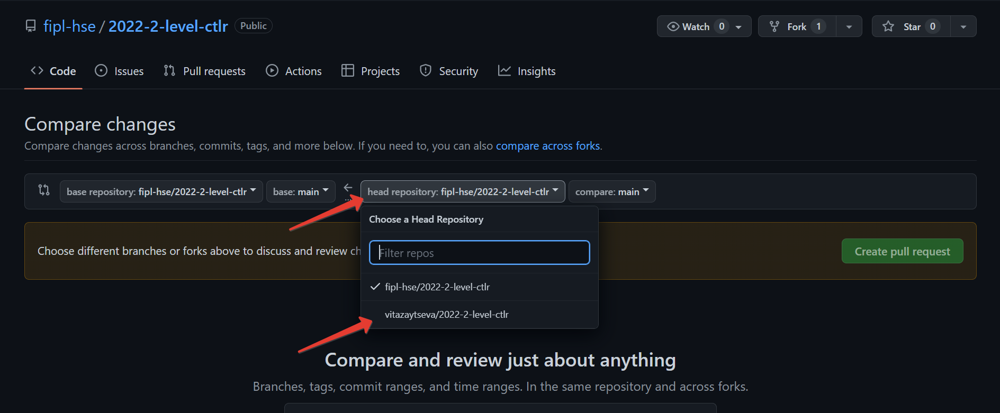
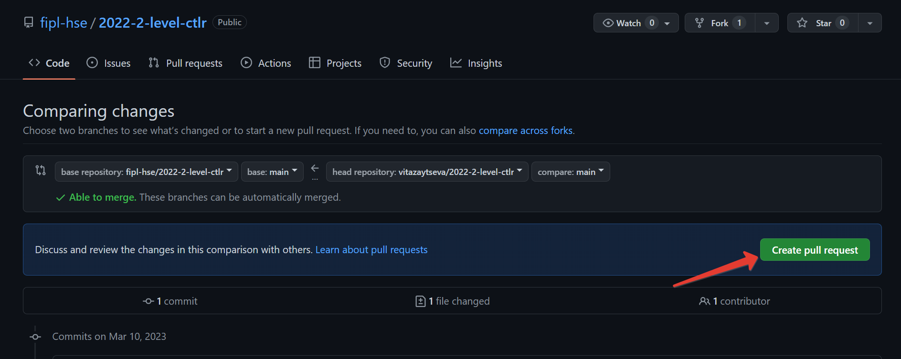
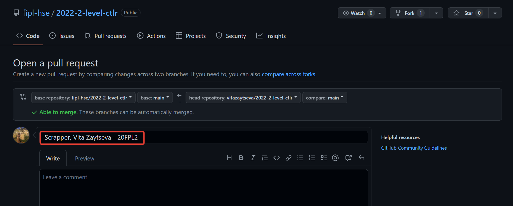

Starting guide
Before starting the “Computer Tools for Linguistic Research” course, each student needs to take a few steps that will prepare the necessary tools for further work.
Check you have everything you need
We assume that after completing the “Programming for Linguists” course, you have:
Python interpreter
Git version control system
PyCharm development environment
GitHub account
If you do not have any of these, go back to steps 1-5 from Подготовка к прохождению курса.
Fork the repository
To fork a repository on the Github, follow these steps:
Open the repository site that your lecturer has sent you.
In the upper right corner click
Fork.Click
Create Fork.
You have forked a repository! Pay attention to the link in the address
bar of the browser: it should contain your Github username and the name
of the repository: https://github.com/<your-username>/202X-2-level-ctlr.
Add collaborators
Only you can make changes to your fork. However, during the course, Dmitry Uraev and Marina Kazyulina will need to make changes to your fork: add changes from the main fork, resolve conflicts, etc. You should add them to collaborators, so they have such an opportunity.
To do this, follow these steps:
Open the fork site you created in the Fork the repository step.
NB: Pay attention to the link in the address bar of the browser: it should contain your Github username and the name of the repository.
Click
Settings.

Select
Collaboratorsfrom the left menu.Click
Add people.Enter Dmitry Uraev and Marina Kazyulina GitHub username, select it from the list, and click
Add <github-username> to this repository.
You have sent Dmitry Uraev and Marina Kazyulina a request to be added to the collaborators! Write to them so they can accept your request.
Clone a fork of the repository to work locally
To clone a fork to work locally, follow these steps:
Open your fork’s website.
Click
Code, selectHTTPSand click the copy button.
Open a terminal and navigate to a convenient folder.
To move from folder to folder in the terminal, use the command
cd <folder-name>If you do not know how to open a terminal, go to the Open a terminal step.
Run
git clone <link-to-your-fork>to clone the repository. For example,git clone https://github.com/vitazaytseva/2022-2-level-ctlr.git.NB: If asked for a password, enter your Personal Access Token.
Create a project in PyCharm development environment
To create a project in the PyCharm development environment to work with your fork, follow these steps:
Open PyCharm and click
Open.Select the folder with the fork that you cloned in the Clone a fork of the repository to work locally step and click
Open.NB: You need to select the folder with the fork called
202X-2-level-ctlr, not the folder with a specific lab.
Click
OK.NB: If in the
Base Interpreterfield the Python version is < 3.10, then clickPython 3.Xand select a newer version from the drop-down list.
You have created a project!
Modify source code and push changes to remote fork
You will work on different files in each lab folder. The process looks like this:
You change the source code in the file.
You commit changes using the
gitversion control system.You push changes to a remote fork.
Change the source code
By default, functions do not have implementations - only pass in the
function body. Your task is to implement functions according to the
provided lab description.
Commit changes
Git is a version control system that allows developers to save and track changes to project files at once.
To commit the changes, follow these steps:
Open a terminal in the PyCharm development environment.

Run
git add <path-to-file-with-changes>. For example,git add lab_5_scraper/scraper.py.Run
git commit -m "message".NB: It is recommended to use a brief description of the changes you made as
message. This text will be public.
Push changes to remote fork
After the previous step the changes are in a committed state. They are stored only in your system. To send them to a remote fork, follow these steps:
Open a terminal in the PyCharm development environment.
Run
git pull.NB: If asked for a password, enter your Personal Access Token.
Run
git push.NB: If asked for a password, enter your Personal Access Token.
Open the main page of your remote fork.
NB: You will see the commit and the message you wrote.
More information about the commands described above can be found in the official Git documentation.
Create a Pull Request
You need to create a Pull Request on GitHub, so mentors can review your changes and validate. To do this, follow these steps:
Open the repository site that your lecturer sent you.
Select
Pull Requests.Click
New pull request. Click
compare across forks.
Click
head repositoryand select your fork from the list (it contains your GitHub username). Click
Create pull request. Enter a name for the Pull Request.
NB: The Pull Request name for Lab 5 must match the pattern:
Scraper, Name Surname - 2XFPLX.NB: The Pull Request name for Lab 6 must match the pattern:
Pipeline, Name Surname - 2XFPLX.
Click
Assigneesand select your mentor from the list.NB: You can find your mentor in the progress sheet.

Click
Create pull request.NB: Your Pull Request will appear in the Pull Requests.
Continue working
Your work consists in repeating the following steps:
You push changes to a remote fork.
They will automatically be updated in the Pull Request you created.
The mentor reviews your code and leaves comments.
You correct the source code according to the comments.
See step #2.